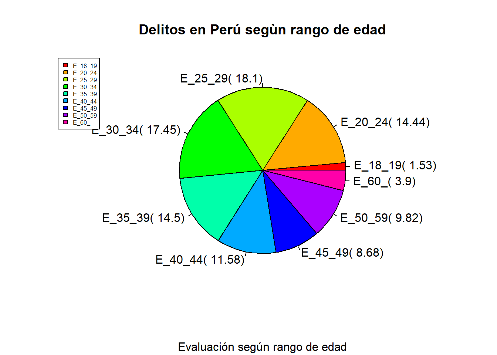
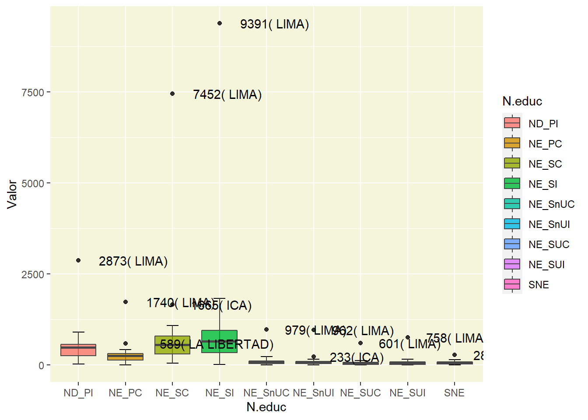

5 PROCESO DE ANÁLISIS DE LOS DATOS
5.1 Análisis Exploratorio de Datos
Para el presente análisis usamos la data descargada anteriormente, las cuales exploraremos y ordenaremos adecuadamente dichos datos.
5.1.1 Importamos los datos
Cargamos los datos crudos y visualizamos los datos en desorden, y con valores NA, las cuales limpiamos y tranformamos.
## # A tibble: 25 x 39
## Departamento Poblacion Numero.de.establecimientos.pe~ Sexo_F Sexo_M Sin.nivel
## <chr> <int> <int> <int> <int> <int>
## 1 AMAZONAS 379384 2 35 824 35
## 2 ANCASH 1083519 2 156 3179 3
## 3 APURIMAC 405759 2 61 549 21
## 4 AREQUIPA 1382730 3 158 2226 48
## 5 AYACUCHO 616176 2 192 2347 89
## 6 CAJAMARCA 1341012 4 107 1867 110
## 7 CALLAO 994494 1 NA 3199 16
## 8 CUSCO 1205527 3 186 2586 70
## 9 HUANCAVELICA 347639 1 9 191 3
## 10 HUANUCO 721047 1 162 2392 145
## # ... with 15 more rows, and 33 more variables: Educacion.inicial <int>,
## # Primaria.completa <int>, Primaria.incompleta <int>, Secund..completa <int>,
## # Secund..incompleta <int>, Sup..no.universitaria.completa <int>,
## # Sup..no.universitaria.incompleta <int>, Sup..universitaria.completa <int>,
## # Sup..universitaria.incompleta <int>, Postgrado <int>, no.aplica <int>,
## # Delitos.contra.el.patrimonio <int>,
## # Delitos.contra.la.seguridad.publica <int>, ...Primeramente reducimos el nombre de nuestras variables paara una mejor visualización
names(data0) <- c("Dep","Pob","NEP",
"S_F","S_M","SNE",
"NE_I","NE_PC","ND_PI",
"NE_SC","NE_SI","NE_SnUC",
"NE_SnUI","NE_SUC","NE_SUI",
"NE_Pstgr","NE_NAp","DcP",
"DcSegP","DcL","DcVCS",
"DcF","DcAP","DcTP",
"DcOFM","DcFP","Dt",
"DcCBFN","DcH","Otros",
"E_18_19","E_20_24","E_25_29",
"E_30_34","E_35_39","E_40_44",
"E_45_49","E_50_59","E_60_")
#View(data0)
tibble(data0)## # A tibble: 25 x 39
## Dep Pob NEP S_F S_M SNE NE_I NE_PC ND_PI NE_SC NE_SI NE_SnUC
## <chr> <int> <int> <int> <int> <int> <int> <int> <int> <int> <int> <int>
## 1 AMAZONAS 3.79e5 2 35 824 35 3 139 265 165 184 24
## 2 ANCASH 1.08e6 2 156 3179 3 3 316 529 834 1164 125
## 3 APURIMAC 4.06e5 2 61 549 21 NA 65 128 166 168 15
## 4 AREQUIPA 1.38e6 3 158 2226 48 NA 167 310 693 659 159
## 5 AYACUCHO 6.16e5 2 192 2347 89 5 284 527 638 733 88
## 6 CAJAMAR~ 1.34e6 4 107 1867 110 3 341 441 416 399 70
## 7 CALLAO 9.94e5 1 NA 3199 16 4 196 227 869 990 102
## 8 CUSCO 1.21e6 3 186 2586 70 3 230 530 801 727 91
## 9 HUANCAV~ 3.48e5 1 9 191 3 NA 22 39 54 42 17
## 10 HUANUCO 7.21e5 1 162 2392 145 8 290 643 564 650 57
## # ... with 15 more rows, and 27 more variables: NE_SnUI <int>, NE_SUC <int>,
## # NE_SUI <int>, NE_Pstgr <int>, NE_NAp <int>, DcP <int>, DcSegP <int>,
## # DcL <int>, DcVCS <int>, DcF <int>, DcAP <int>, DcTP <int>, DcOFM <int>,
## # DcFP <int>, Dt <int>, DcCBFN <int>, DcH <int>, Otros <int>, E_18_19 <int>,
## # E_20_24 <int>, E_25_29 <int>, E_30_34 <int>, E_35_39 <int>, E_40_44 <int>,
## # E_45_49 <int>, E_50_59 <int>, E_60_ <chr>5.1.2 Eliminar NA
Se evalua los Missing Values en la data ya que no deben ser el mayor porcentaje del total.

## Dep Pob NEP DcP DcSegP DcL DcVCS DcF DcAP E_60_ S_M SNE NE_PC ND_PI NE_SC
## 1 1 1 1 1 1 1 1 1 1 1 1 1 1 1 1
## 1 1 1 1 1 1 1 1 1 1 1 1 1 1 1 1
## 1 1 1 1 1 1 1 1 1 1 1 1 1 1 1 1
## 1 1 1 1 1 1 1 1 1 1 1 1 1 1 1 1
## 1 1 1 1 1 1 1 1 1 1 1 1 1 1 1 1
## 2 1 1 1 1 1 1 1 1 1 1 1 1 1 1 1
## 2 1 1 1 1 1 1 1 1 1 1 1 1 1 1 1
## 2 1 1 1 1 1 1 1 1 1 1 1 1 1 1 1
## 2 1 1 1 1 1 1 1 1 1 1 1 1 1 1 1
## 1 1 1 1 1 1 1 1 1 1 1 1 1 1 1 1
## 1 1 1 1 1 1 1 1 1 1 1 1 1 1 1 1
## 1 1 1 1 1 1 1 1 1 1 1 1 1 1 1 1
## 1 1 1 1 1 1 1 1 1 1 1 1 1 1 1 1
## 1 1 1 1 1 1 1 1 1 1 1 1 1 1 1 1
## 1 1 1 1 1 1 1 1 1 1 1 1 1 1 1 1
## 1 1 1 1 1 1 1 1 1 1 1 1 1 1 1 1
## 1 1 1 1 1 1 1 1 1 1 1 1 1 1 1 1
## 1 1 1 1 1 1 1 1 1 1 1 1 1 1 1 1
## 1 1 1 1 1 1 1 1 1 1 1 1 1 1 1 1
## 1 1 1 1 1 1 1 1 1 1 1 1 1 1 1 1
## 1 1 1 1 1 1 1 1 1 1 1 0 0 0 0 0
## 0 0 0 0 0 0 0 0 0 0 1 1 1 1 1
## NE_SI NE_SnUC NE_SnUI NE_SUC NE_SUI E_18_19 E_20_24 E_25_29 E_30_34 E_35_39
## 1 1 1 1 1 1 1 1 1 1 1
## 1 1 1 1 1 1 1 1 1 1 1
## 1 1 1 1 1 1 1 1 1 1 1
## 1 1 1 1 1 1 1 1 1 1 1
## 1 1 1 1 1 1 1 1 1 1 1
## 2 1 1 1 1 1 1 1 1 1 1
## 2 1 1 1 1 1 1 1 1 1 1
## 2 1 1 1 1 1 1 1 1 1 1
## 2 1 1 1 1 1 1 1 1 1 1
## 1 1 1 1 1 1 1 1 1 1 1
## 1 1 1 1 1 1 1 1 1 1 1
## 1 1 1 1 1 1 1 1 1 1 1
## 1 1 1 1 1 1 1 1 1 1 1
## 1 1 1 1 1 1 1 1 1 1 1
## 1 1 1 1 1 1 1 1 1 1 1
## 1 1 1 1 1 1 1 1 1 1 1
## 1 1 1 1 1 1 1 1 1 1 1
## 1 1 1 1 1 1 1 1 1 1 1
## 1 1 1 1 1 1 1 1 1 1 1
## 1 1 1 1 1 1 1 1 1 1 1
## 1 0 0 0 0 0 0 0 0 0 0
## 1 1 1 1 1 1 1 1 1 1
## E_40_44 E_45_49 E_50_59 S_F DcFP NE_I DcTP DcOFM NE_NAp NE_Pstgr Dt Otros
## 1 1 1 1 1 1 1 1 1 1 1 1 1
## 1 1 1 1 1 1 1 1 1 1 1 1 1
## 1 1 1 1 1 1 1 1 1 1 1 1 0
## 1 1 1 1 1 1 1 1 1 1 1 1 0
## 1 1 1 1 1 1 1 1 1 1 1 0 0
## 2 1 1 1 1 1 1 1 1 1 1 0 0
## 2 1 1 1 1 1 1 1 1 1 0 1 1
## 2 1 1 1 1 1 1 1 1 1 0 0 0
## 2 1 1 1 1 1 1 1 1 0 1 1 1
## 1 1 1 1 1 1 1 1 1 0 1 1 1
## 1 1 1 1 1 1 1 1 1 0 1 1 0
## 1 1 1 1 1 1 1 1 1 0 0 1 1
## 1 1 1 1 1 1 1 1 0 1 1 0 0
## 1 1 1 1 1 1 1 1 0 1 0 1 1
## 1 1 1 1 1 1 0 1 1 1 1 1 1
## 1 1 1 1 1 0 1 0 1 0 1 0 0
## 1 1 1 1 1 0 0 0 1 0 1 0 0
## 1 1 1 1 1 0 0 0 0 1 0 0 0
## 1 1 1 1 0 1 1 1 1 1 1 1 1
## 1 1 1 1 0 1 1 1 0 1 0 0 0
## 1 0 0 0 0 1 0 0 1 0 0 1 0
## 1 1 1 3 3 4 4 4 8 9 10 14
## DcCBFN DcH
## 1 1 0 1
## 1 0 0 2
## 1 1 0 2
## 1 0 0 3
## 1 1 1 2
## 2 0 0 4
## 2 0 0 3
## 2 0 0 5
## 2 1 1 1
## 1 1 0 2
## 1 1 0 3
## 1 0 0 4
## 1 1 0 4
## 1 0 0 4
## 1 1 0 2
## 1 0 0 7
## 1 0 0 8
## 1 0 0 9
## 1 0 0 3
## 1 0 0 7
## 1 0 1 25
## 16 21 114Observando el grafico, se entiende que para la primera fila hay una observacion que tiene NA en la variable DcH en la segunda fila,hay una observacion que tiene NA en DcBFN y DcH, así sucesivamente hasta llegar a la ultima fila, donde una observacion tiene 26 NA, el cual definitivamente se eliminara.
5.1.3 Eliminar filas
Las variables principales que son sustento base de que existen los datos y son reales, vienen a ser cinco, la variable poblacion, establecimientos penitenciarios, mujeres y varones, es por ello que si alguno no tiene datos, procedera a ser eliminado
data0 <- data0[!is.na(data0$Pob),]
data0 <- data0[!is.na(data0$NEP),]
data0 <- data0[!is.na(data0$S_F),]
data0 <- data0[!is.na(data0$S_M),]
tibble(data0) %>% print(n=26)## # A tibble: 22 x 39
## Dep Pob NEP S_F S_M SNE NE_I NE_PC ND_PI NE_SC NE_SI NE_SnUC
## <chr> <int> <int> <int> <int> <int> <int> <int> <int> <int> <int> <int>
## 1 "AMAZON~ 3.79e5 2 35 824 35 3 139 265 165 184 24
## 2 "ANCASH" 1.08e6 2 156 3179 3 3 316 529 834 1164 125
## 3 "APURIM~ 4.06e5 2 61 549 21 NA 65 128 166 168 15
## 4 "AREQUI~ 1.38e6 3 158 2226 48 NA 167 310 693 659 159
## 5 "AYACUC~ 6.16e5 2 192 2347 89 5 284 527 638 733 88
## 6 "CAJAMA~ 1.34e6 4 107 1867 110 3 341 441 416 399 70
## 7 "CUSCO" 1.21e6 3 186 2586 70 3 230 530 801 727 91
## 8 "HUANCA~ 3.48e5 1 9 191 3 NA 22 39 54 42 17
## 9 "HUANUC~ 7.21e5 1 162 2392 145 8 290 643 564 650 57
## 10 "ICA" 8.51e5 2 302 4971 72 3 312 578 1665 1831 236
## 11 "JUNIN" 1.25e6 7 180 2861 84 14 320 613 803 840 90
## 12 "LA LIB~ 1.78e6 2 283 4471 124 9 589 905 1084 1518 154
## 13 "LAMBAY~ 1.20e6 1 163 3000 94 5 373 548 791 999 103
## 14 "LIMA" 1.78e7 10 1884 24140 281 29 1740 2873 7452 9391 979
## 15 "LORETO" 3.69e7 3 74 1172 53 1 136 259 285 351 36
## 16 "PASCO" 2.53e6 2 14 181 4 1 10 26 81 39 6
## 17 "PIURA" 3.59e6 1 94 3098 84 1 310 619 805 1000 123
## 18 "PUNO" 1.17e6 3 190 1597 37 2 200 298 556 403 66
## 19 "SAN MA~ 8.13e5 4 62 2221 92 6 422 564 398 560 86
## 20 "TACNA " 3.29e5 3 110 992 24 2 75 156 314 335 45
## 21 "TUMBES" 2.25e5 1 37 823 27 83 156 201 297 23 21
## 22 "UCAYAL~ 4.96e5 1 104 1949 65 1 207 413 456 690 60
## # ... with 27 more variables: NE_SnUI <int>, NE_SUC <int>, NE_SUI <int>,
## # NE_Pstgr <int>, NE_NAp <int>, DcP <int>, DcSegP <int>, DcL <int>,
## # DcVCS <int>, DcF <int>, DcAP <int>, DcTP <int>, DcOFM <int>, DcFP <int>,
## # Dt <int>, DcCBFN <int>, DcH <int>, Otros <int>, E_18_19 <int>,
## # E_20_24 <int>, E_25_29 <int>, E_30_34 <int>, E_35_39 <int>, E_40_44 <int>,
## # E_45_49 <int>, E_50_59 <int>, E_60_ <chr>Como se observa, la cantidad de departamentos se redujo, se elimino al Callao, Moquegua y Madre de Dios
5.1.4 Eliminar columnas
Teniendo todos los departamentos con la data principal, se procede a analizar las varibles, teniendo en cuenta que no podemos trabajar con NA,se procedera a eliminar aquellas columnas que la contengan.
Examinamos cuantos NA tiene cada columna para darnos una idea
## Dep Pob NEP S_F S_M SNE NE_I NE_PC
## 0 0 0 0 0 0 3 0
## ND_PI NE_SC NE_SI NE_SnUC NE_SnUI NE_SUC NE_SUI NE_Pstgr
## 0 0 0 0 0 0 0 7
## NE_NAp DcP DcSegP DcL DcVCS DcF DcAP DcTP
## 7 0 0 0 0 0 0 3
## DcOFM DcFP Dt DcCBFN DcH Otros E_18_19 E_20_24
## 3 3 9 13 19 12 0 0
## E_25_29 E_30_34 E_35_39 E_40_44 E_45_49 E_50_59 E_60_
## 0 0 0 0 0 0 0Eliminamos todas las columnas que tienen al menos un NA
## Dep Pob NEP S_F S_M SNE NE_I NE_PC
## 0.0000000 0.0000000 0.0000000 0.0000000 0.0000000 0.0000000 0.1363636 0.0000000
## ND_PI NE_SC NE_SI NE_SnUC NE_SnUI NE_SUC NE_SUI NE_Pstgr
## 0.0000000 0.0000000 0.0000000 0.0000000 0.0000000 0.0000000 0.0000000 0.3181818
## NE_NAp DcP DcSegP DcL DcVCS DcF DcAP DcTP
## 0.3181818 0.0000000 0.0000000 0.0000000 0.0000000 0.0000000 0.0000000 0.1363636
## DcOFM DcFP Dt DcCBFN DcH Otros E_18_19 E_20_24
## 0.1363636 0.1363636 0.4090909 0.5909091 0.8636364 0.5454545 0.0000000 0.0000000
## E_25_29 E_30_34 E_35_39 E_40_44 E_45_49 E_50_59 E_60_
## 0.0000000 0.0000000 0.0000000 0.0000000 0.0000000 0.0000000 0.0000000## # A tibble: 22 x 29
## Dep Pob NEP S_F S_M SNE NE_PC ND_PI NE_SC NE_SI NE_SnUC NE_SnUI
## <chr> <int> <int> <int> <int> <int> <int> <int> <int> <int> <int> <int>
## 1 "AMAZ~ 3.79e5 2 35 824 35 139 265 165 184 24 16
## 2 "ANCA~ 1.08e6 2 156 3179 3 316 529 834 1164 125 87
## 3 "APUR~ 4.06e5 2 61 549 21 65 128 166 168 15 13
## 4 "AREQ~ 1.38e6 3 158 2226 48 167 310 693 659 159 127
## 5 "AYAC~ 6.16e5 2 192 2347 89 284 527 638 733 88 62
## 6 "CAJA~ 1.34e6 4 107 1867 110 341 441 416 399 70 44
## 7 "CUSC~ 1.21e6 3 186 2586 70 230 530 801 727 91 102
## 8 "HUAN~ 3.48e5 1 9 191 3 22 39 54 42 17 6
## 9 "HUAN~ 7.21e5 1 162 2392 145 290 643 564 650 57 59
## 10 "ICA" 8.51e5 2 302 4971 72 312 578 1665 1831 236 233
## 11 "JUNI~ 1.25e6 7 180 2861 84 320 613 803 840 90 78
## 12 "LA L~ 1.78e6 2 283 4471 124 589 905 1084 1518 154 159
## 13 "LAMB~ 1.20e6 1 163 3000 94 373 548 791 999 103 94
## 14 "LIMA" 1.78e7 10 1884 24140 281 1740 2873 7452 9391 979 962
## 15 "LORE~ 3.69e7 3 74 1172 53 136 259 285 351 36 38
## 16 "PASC~ 2.53e6 2 14 181 4 10 26 81 39 6 5
## 17 "PIUR~ 3.59e6 1 94 3098 84 310 619 805 1000 123 134
## 18 "PUNO" 1.17e6 3 190 1597 37 200 298 556 403 66 51
## 19 "SAN ~ 8.13e5 4 62 2221 92 422 564 398 560 86 52
## 20 "TACN~ 3.29e5 3 110 992 24 75 156 314 335 45 35
## 21 "TUMB~ 2.25e5 1 37 823 27 156 201 297 23 21 11
## 22 "UCAY~ 4.96e5 1 104 1949 65 207 413 456 690 60 73
## # ... with 17 more variables: NE_SUC <int>, NE_SUI <int>, DcP <int>,
## # DcSegP <int>, DcL <int>, DcVCS <int>, DcF <int>, DcAP <int>, E_18_19 <int>,
## # E_20_24 <int>, E_25_29 <int>, E_30_34 <int>, E_35_39 <int>, E_40_44 <int>,
## # E_45_49 <int>, E_50_59 <int>, E_60_ <chr>De 39 variables se eliminaron 10. Ahora verificamos que nuestra data no tenga NA
## /\ /\
## { `---' }
## { O O }
## ==> V <== No need for mice. This data set is completely observed.
## \ \|/ /
## `-----'
## Dep Pob NEP S_F S_M SNE NE_PC ND_PI NE_SC NE_SI NE_SnUC NE_SnUI NE_SUC
## 22 1 1 1 1 1 1 1 1 1 1 1 1 1
## 0 0 0 0 0 0 0 0 0 0 0 0 0
## NE_SUI DcP DcSegP DcL DcVCS DcF DcAP E_18_19 E_20_24 E_25_29 E_30_34 E_35_39
## 22 1 1 1 1 1 1 1 1 1 1 1 1
## 0 0 0 0 0 0 0 0 0 0 0 0
## E_40_44 E_45_49 E_50_59 E_60_
## 22 1 1 1 1 0
## 0 0 0 0 05.1.5 Gráfico resumen
Mostramos porcentaje de Delitos en todo el Perú, después de la limpieza de datos.
#glimpse(data1)
total <- dplyr::select(data1,15:20)
suma <- colSums (total)
porcent <- cbind(suma,prop = prop.table(suma))*100
grafico <- data.frame(porcent)
grafico## suma prop
## DcP 3821900 48.259969
## DcSegP 1784000 22.526959
## DcL 1354200 17.099780
## DcVCS 693300 8.754451
## DcF 164900 2.082228
## DcAP 101100 1.276612etiquetas <- c("48.25% DcP","22.52% DcSegP","17.09% DcL","8.75% DcVCS","2.08% DcF","1.27% DcAP")
pie(grafico$prop , col=rainbow(length(grafico$prop)),
labels = etiquetas,
main = "Delitos en Perú",
sub = "Evaluación de la cantidad de delitos registrados por tipo.")
legend("topleft",
c("D. C. patrominio",
"D. C. la seguridad publica",
"D. C. la libertad",
"D. C. la vida, el cuerpo y la salud",
"D. C. la familia",
"D. C. la administracion publica"),
cex = 0.5,
fill = rainbow(length(grafico$prop)))En el grafico observamos que el Delito contra el patrimonio es el que mas se da a nivel Nacional, seguido por el Delito contra la seguridad publica, estos dos abarcan casi el 70% del total ya que van de la mano, la inseguridad en las calles genera robos, extorsion, etc
Mostramos porcentaje del nivel de educaciòn
educacion <- dplyr::select(data1,6:14)
tot <- colSums(educacion)
perEDUC<- (cbind(tot,percent = prop.table(tot))*100) %>%
data.frame() %>% summarise(etiquet = c ("SNE",
"NE_PC",
"NE_PI",
"NE_SC",
"NE_SI",
"NE_SnUC",
"NE_SnIU",
"NE_SUC",
"NE_SUI"),
percent=round(percent,2),
total = tot,
leyd = sprintf("%1s( %1s)" ,etiquet, percent))
pie(perEDUC$percent , col=rainbow(length(perEDUC$percent)),
labels = perEDUC$leyd,
main = "Delitos en Perú segùn nivel de estudio",
sub = "Evaluación según nivel de estudio")
legend("topleft",
perEDUC$etiquet,
cex = 0.5,
fill = rainbow(length(perEDUC$percent))) En el grafico observamos que el nivel de estudio en el que se comete mas delitos son aquellas personas con secundaria incompleta (32.26%) , seguido de las personas con secundaria completa(27.45 %), mientras que el mas bajo son aquel grupo sin nivel de educaciòn.
En el grafico observamos que el nivel de estudio en el que se comete mas delitos son aquellas personas con secundaria incompleta (32.26%) , seguido de las personas con secundaria completa(27.45 %), mientras que el mas bajo son aquel grupo sin nivel de educaciòn.
Mostramos los datos segun rango de edad
edades <- dplyr::select(data1, 21:28)
totale <- edades %>% colSums()
perEDAD<- (cbind(totale,percent = prop.table(totale))*100) %>%
data.frame() %>% summarise(etiquet = c ("E_18_19",
"E_20_24",
"E_25_29",
"E_30_34",
"E_35_39",
"E_40_44",
"E_45_49",
"E_50_59"),
percent=round(percent,2),
total = totale,
leyd = sprintf("%1s( %1s)" ,etiquet, percent))
pie(perEDAD$percent , col=rainbow(length(perEDAD$percent)),
labels = perEDAD$leyd,
main = "Delitos en Perú segùn rango de edad",
sub = "Evaluación según rango de edad")
legend("topleft",
perEDAD$etiquet,
cex = 0.5,
fill = rainbow(length(perEDAD$percent)))
En el grafico observamos que los rangos de edades en los que se comete màs delitos son los comprendidos entre 25 y 29 años con 18.83%, seguido de las edades comprendidas entre 30 y 34 años, mientras que el porcentaje mas bajo con 1.6% son el grupo comprendido entre los 18-19 años .
5.1.6 Anlizando las variables
Analizemos segun sexo
sexo <- dplyr::select(data1,1,4:5)
ki<- melt(sexo)
ggplot(data = ki , mapping = aes(x = Dep, y= value , fill= variable))+
geom_col(position="dodge")+ # el valor de la observacion es el de la barra
labs(title = "Comparaciòn por sexo",
x = "Departamento",
y = "valor")+
theme(axis.text.x = element_text(angle = 20, size = 6,hjust = 1, vjust = 1))En el gràfico podemos observar que el numero de varones es mucho mayor que las mujeres en todos los departamentos.
Tipo de delito
delit<- data1 %>% dplyr::select(1,15:20) %>%
pivot_longer(-Dep, names_to = "delitos", values_to = "Valor") %>%
group_by(delitos) %>%
summarise(delitos,Valor, Dep)
ggplot(delit , mapping = aes( x = delitos , y = Valor , fill = delitos))+
stat_boxplot(geom = "errorbar", # Error bars
width = 0.25) + # Bars width
geom_boxplot(alpha = 0.8, # Transparencia
colour = "#474747", # Color del borde
outlier.colour = 1)+
ggtitle ("Evaluacion de delitos \nSegun el tipo de delito")+
theme(panel.background = element_rect(fill = "beige"),
plot.title = element_text(family="Comic Sans MS",
size=rel(2), #Tamaño relativo de la letra del título
vjust=2, #Justificación vertical, para separarlo del gráfico
face="bold", #Letra negrilla. Otras posibilidades "plain", "italic", "bold" y "bold.italic"
color="blue", #Color del texto
lineheight=1.5))+
scale_fill_hue(labels =c("D. C. la administracion publica",
"D. C. la familia",
"D. C. la libertad",
"D. C. patrominio",
"D. C. la seguridad publica",
"D. C. la vida, el cuerpo y la salud"))ggplot(delit, mapping = aes(x = Valor)) +
geom_histogram( aes(fill = delitos)) +
labs(title = "Distribuciòn de delitos segùn tipo",
y = "Tipo de delito") +
facet_grid(vars(delitos))Nivel de Educaciòn
educ<- data1 %>% dplyr::select(1,6:14) %>%
pivot_longer(-Dep, names_to = "N.educ", values_to = "Valor") %>%
group_by(N.educ) %>%
summarise(N.educ,Valor, Dep)
ggplot( educ, mapping = aes( x = N.educ , y = Valor , fill = N.educ))+
stat_boxplot(geom = "errorbar",
width = 0.25) +
geom_boxplot(alpha = 0.8, # Transparencia
colour = "#474747", # Color del borde
outlier.colour = 1) + # Color atípicos
theme(
panel.background = element_rect(fill = "beige")
)
ggplot(educ, mapping = aes(x = Valor)) +
geom_histogram( aes(fill = N.educ)) +
labs(title = "Distribuciòn de delitos segùn nivel de educaciòn",
y = "Nivel de educaciòn") +
facet_grid(vars(N.educ))
Analicemos la edad
edad1 <-data1 %>% dplyr::select(1,21:28) %>%
pivot_longer(-Dep, names_to = "edad", values_to = "Valor") %>%
group_by(edad) %>%
summarise(edad,Valor, Dep)
ggplot(edad1, mapping = aes( x = edad , y = Valor , fill = edad))+
stat_boxplot(geom = "errorbar",
width = 0.25) +
geom_boxplot(alpha = 0.8, # Transparencia
colour = "#474747", # Color del borde
outlier.colour = 1) +
ggtitle ("Evaluacion de delitos \nSegun grupo de edad")+# Color atípicos
theme(
panel.background = element_rect(fill = "beige"),
plot.title = element_text(family="Comic Sans MS",
size=rel(2), #Tamaño relativo de la letra del título
vjust=2, #Justificación vertical, para separarlo del gráfico
face="bold", #Letra negrilla. Otras posibilidades "plain", "italic", "bold" y "bold.italic"
color="blue", #Color del texto
lineheight=1.5)
)
ggplot(edad1, mapping = aes(x = Valor)) +
geom_histogram( aes(fill = edad)) +
labs(title = "Distribuciòn de delitos segùn grupo de edad",
y = "Grupo de edad") +
facet_grid(vars(edad))
Analicemos la data sin Lima
Tipos de delitos
delit2<- data2 %>% dplyr::select(1,15:20) %>%
pivot_longer(-Dep, names_to = "delitos", values_to = "Valor") %>%
group_by(delitos) %>%
summarise(delitos,Valor, Dep)## `summarise()` has grouped output by 'delitos'. You can override using the `.groups` argument.ggplot(delit2 , mapping = aes( x = delitos , y = Valor , fill = delitos))+
stat_boxplot(geom = "errorbar", # Error bars
width = 0.25) + # Bars width
geom_boxplot(alpha = 0.8, # Transparencia
colour = "#474747", # Color del borde
outlier.colour = 1)+
ggtitle ("Evaluacion de delitos \nSegun el tipo de delito")+
theme(panel.background = element_rect(fill = "beige"),
plot.title = element_text(family="Comic Sans MS",
size=rel(2), #Tamaño relativo de la letra del título
vjust=2, #Justificación vertical, para separarlo del gráfico
face="bold", #Letra negrilla. Otras posibilidades "plain", "italic", "bold" y "bold.italic"
color="blue", #Color del texto
lineheight=1.5))+
scale_fill_hue(labels =c("D. C. la administracion publica",
"D. C. la familia",
"D. C. la libertad",
"D. C. patrominio",
"D. C. la seguridad publica",
"D. C. la vida, el cuerpo y la salud"))## Warning in grid.Call(C_textBounds, as.graphicsAnnot(x$label), x$x, x$y, : font
## family not found in Windows font database
## Warning in grid.Call(C_textBounds, as.graphicsAnnot(x$label), x$x, x$y, : font
## family not found in Windows font database
## Warning in grid.Call(C_textBounds, as.graphicsAnnot(x$label), x$x, x$y, : font
## family not found in Windows font database
ggplot(delit2, mapping = aes(x = Valor)) +
geom_histogram( aes(fill = delitos)) +
labs(title = "Distribuciòn de delitos segùn tipo",
y = "Tipo de delito") +
facet_grid(vars(delitos))## `stat_bin()` using `bins = 30`. Pick better value with `binwidth`. Nivel de Educaciòn
Nivel de Educaciòn
educ2<- data2 %>% dplyr::select(1,6:14) %>%
pivot_longer(-Dep, names_to = "N.educ", values_to = "Valor") %>%
group_by(N.educ) %>%
summarise(N.educ,Valor, Dep)
ggplot( educ2, mapping = aes( x = N.educ , y = Valor , fill = N.educ))+
stat_boxplot(geom = "errorbar",
width = 0.25) +
geom_boxplot(alpha = 0.8, # Transparencia
colour = "#474747", # Color del borde
outlier.colour = 1) + # Color atípicos
theme(
panel.background = element_rect(fill = "beige")
)
ggplot(educ2, mapping = aes(x = Valor)) +
geom_histogram( aes(fill = N.educ)) +
labs(title = "Distribuciòn de delitos segùn nivel de educaciòn",
y = "Nivel de educaciòn") +
facet_grid(vars(N.educ))
Analicemos la edad
edad2 <-data2 %>% dplyr::select(1,21:28) %>%
pivot_longer(-Dep, names_to = "edad", values_to = "Valor") %>%
group_by(edad) %>%
summarise(edad,Valor, Dep)
ggplot(edad2, mapping = aes( x = edad , y = Valor , fill = edad))+
stat_boxplot(geom = "errorbar",
width = 0.25) +
geom_boxplot(alpha = 0.8, # Transparencia
colour = "#474747", # Color del borde
outlier.colour = 1) +
ggtitle ("Evaluacion de delitos \nSegun grupo de edad")+# Color atípicos
theme(
panel.background = element_rect(fill = "beige"),
plot.title = element_text(family="Comic Sans MS",
size=rel(2), #Tamaño relativo de la letra del título
vjust=2, #Justificación vertical, para separarlo del gráfico
face="bold", #Letra negrilla. Otras posibilidades "plain", "italic", "bold" y "bold.italic"
color="blue", #Color del texto
lineheight=1.5)
)